Conversation 1 · At Home
Were you at home yesterday ?
ನೀವು ನಿನ್ನೆ ಮನೆಯಲ್ಲಿ ಇದ್ದೀರಾ?
Neevu ninne maneyalli iddeera?
Original PDF: ninne niivu maneyalliddraa ?
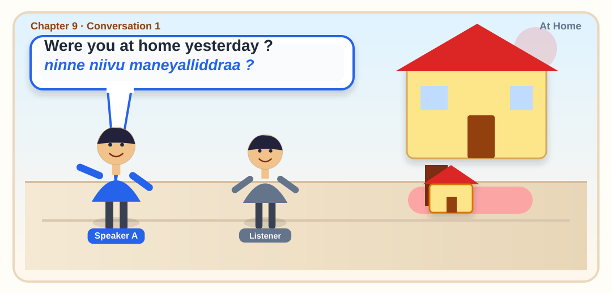
Chapter 9
Scene-by-scene practice with audio and speaking checks.

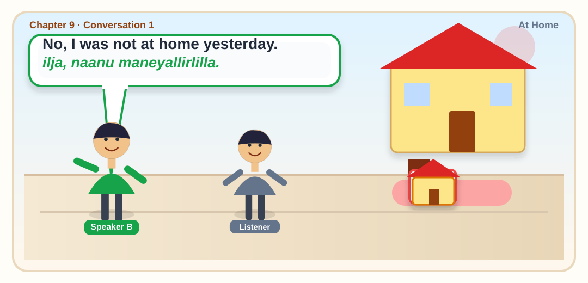
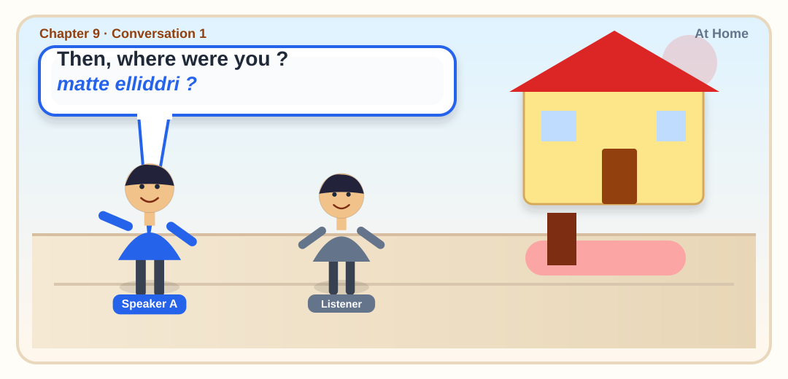
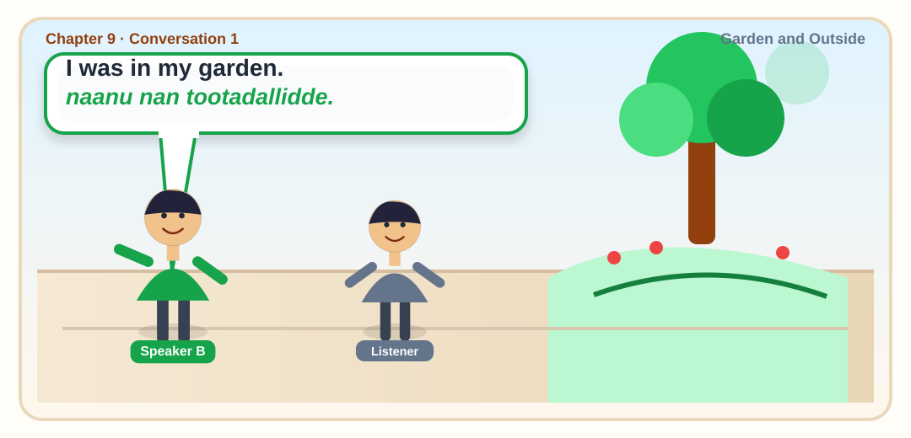
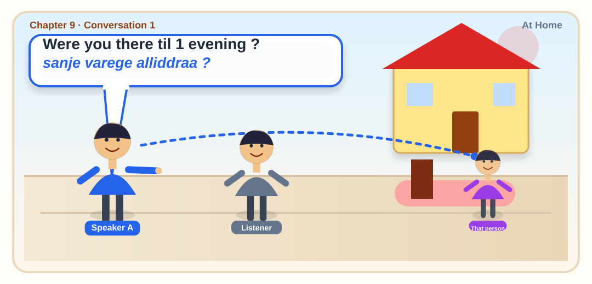
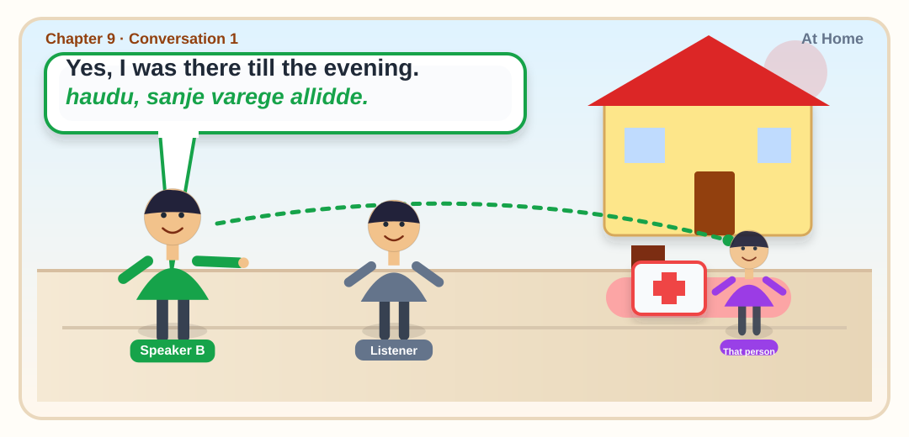
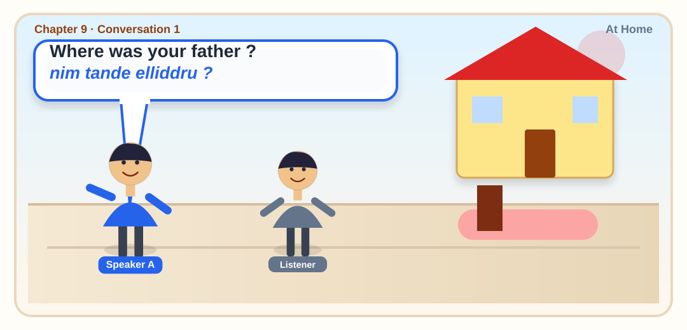
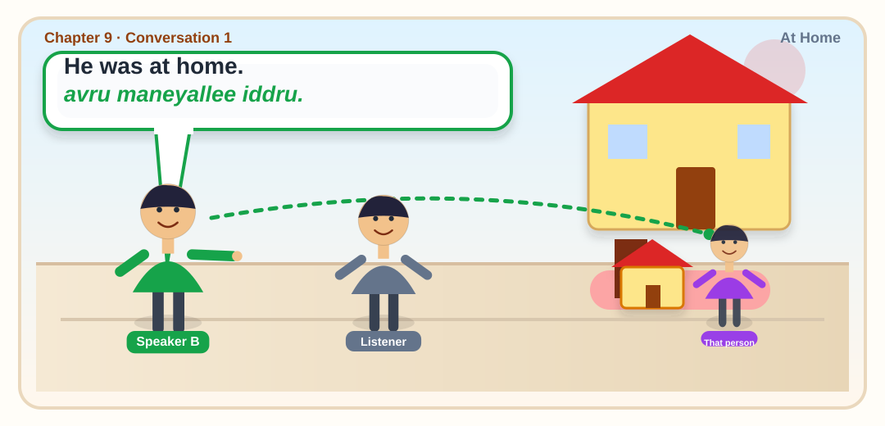
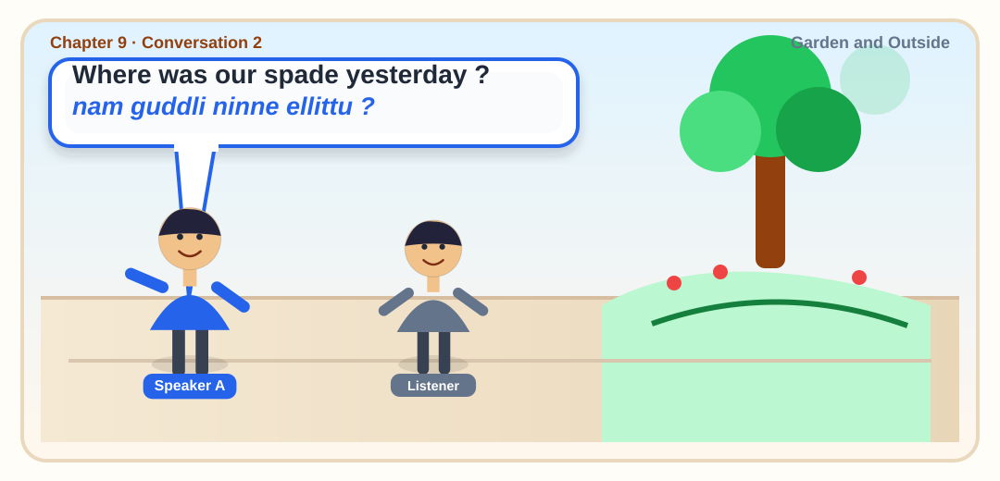
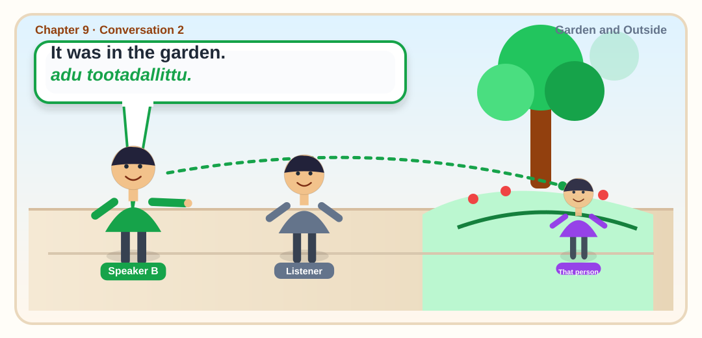
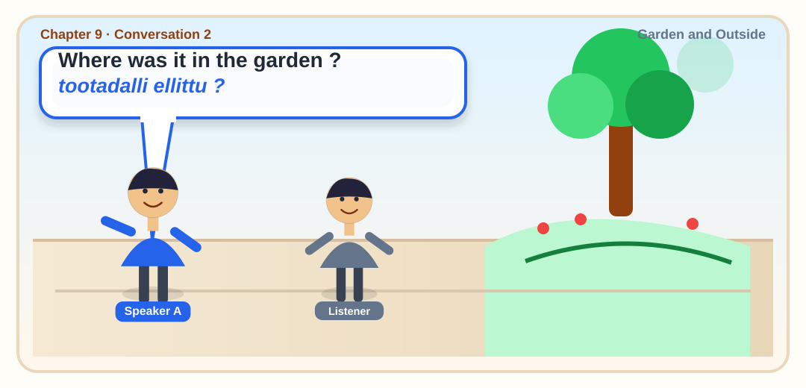
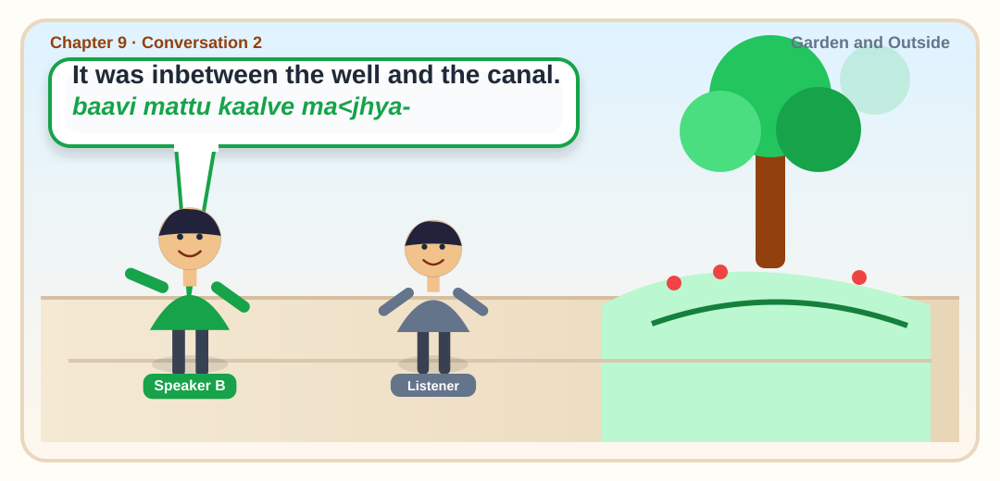
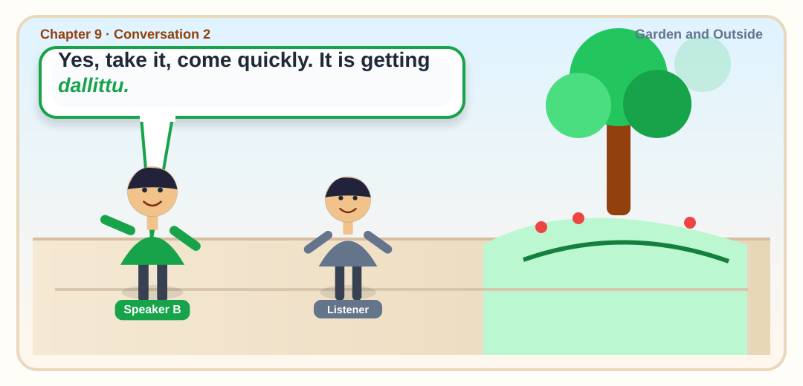
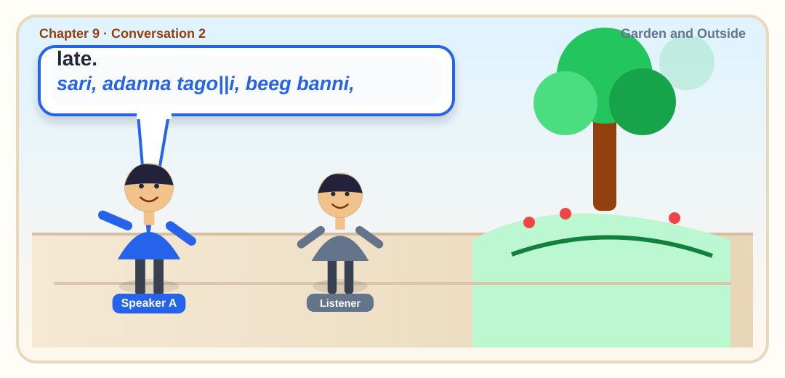
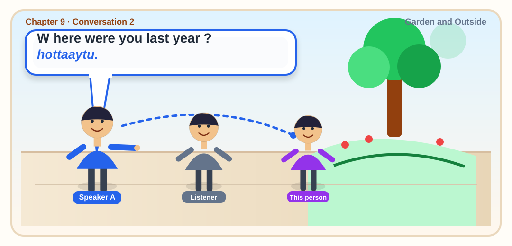
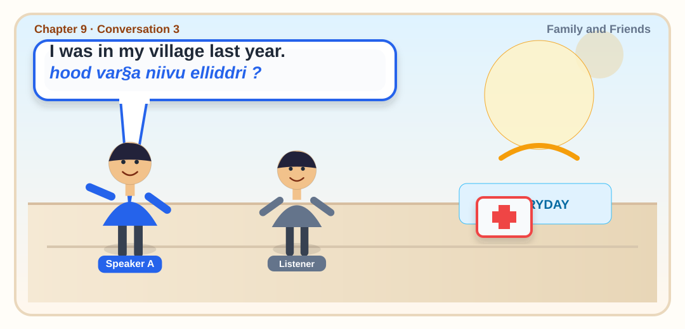
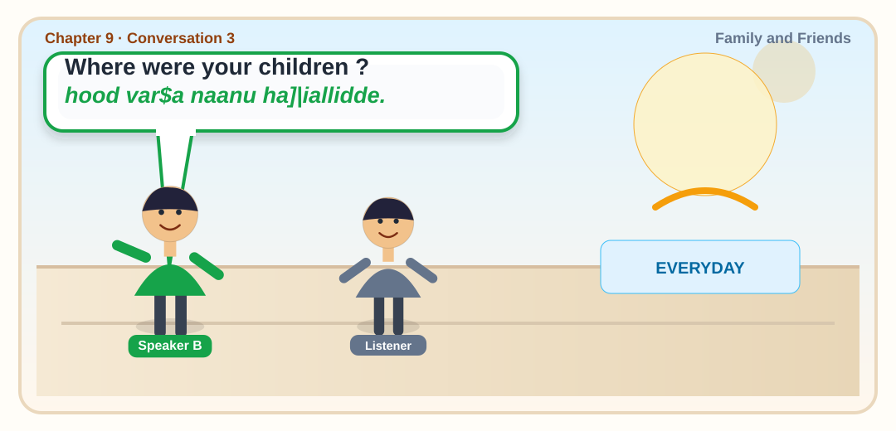
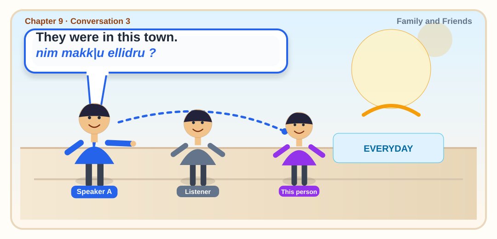
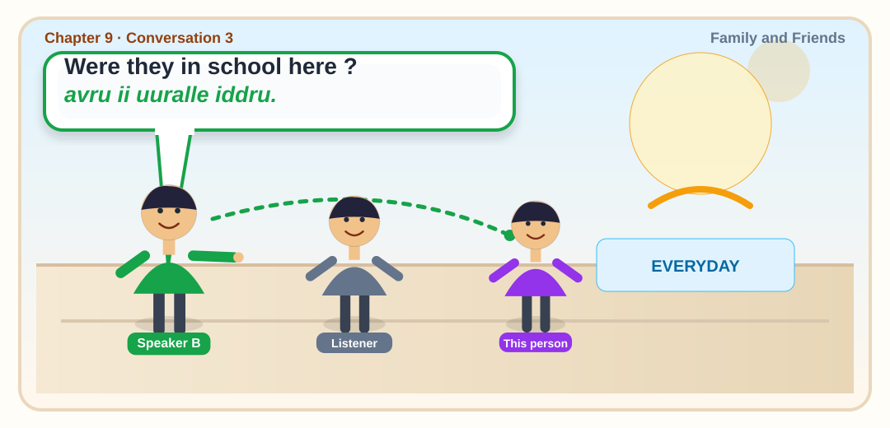
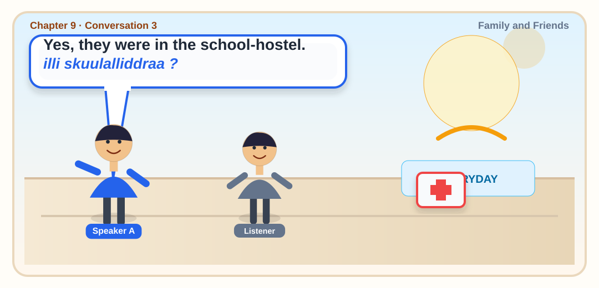
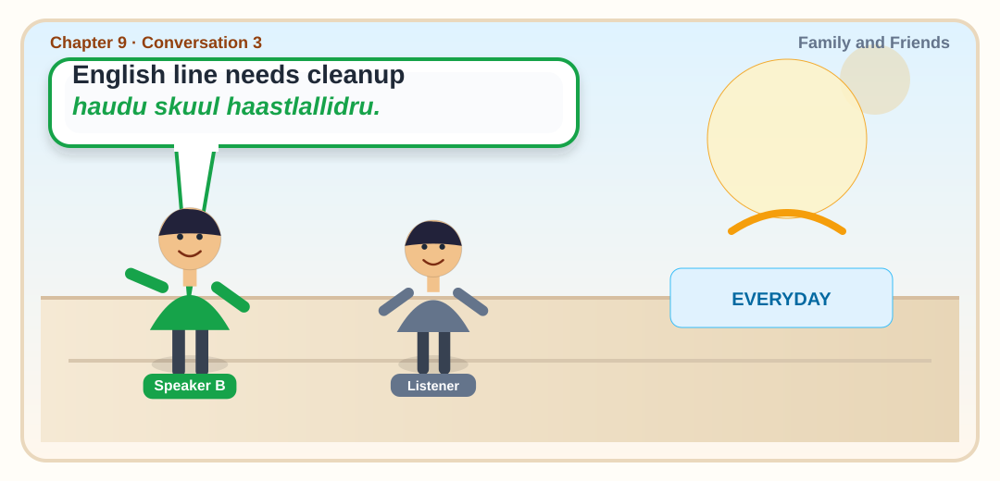
8 paired lines from PDF page 38
| Who | Kannada from source PDF | English |
|---|---|---|
| A | ninne niivu maneyalliddraa ? | Were you at home yesterday ? |
| B | ilja, naanu maneyallirlilla. | No, I was not at home yesterday. |
| A | matte elliddri ? | Then, where were you ? |
| B | naanu nan tootadallidde. | I was in my garden. |
| A | sanje varege alliddraa ? | Were you there til 1 evening ? |
| B | haudu, sanje varege allidde. | Yes, I was there till the evening. |
| A | nim tande elliddru ? | Where was your father ? |
| B | avru maneyallee iddru. | He was at home. |
7 paired lines from PDF page 38
| Who | Kannada from source PDF | English |
|---|---|---|
| A | nam guddli ninne ellittu ? | Where was our spade yesterday ? |
| B | adu tootadallittu. | It was in the garden. |
| A | tootadalli ellittu ? | Where was it in the garden ? |
| B | baavi mattu kaalve ma<jhya- | It was inbetween the well and the canal. |
| B | dallittu. | Yes, take it, come quickly. It is getting |
| A | sari, adanna tago||i, beeg banni, | late. |
| A | hottaaytu. | W here were you last year ? |
6 paired lines from PDF page 38
| Who | Kannada from source PDF | English |
|---|---|---|
| A | hood var§a niivu elliddri ? | I was in my village last year. |
| B | hood var$a naanu ha]|iallidde. | Where were your children ? |
| A | nim makk|u ellidru ? | They were in this town. |
| B | avru ii uuralle iddru. | Were they in school here ? |
| A | illi skuulalliddraa ? | Yes, they were in the school-hostel. |
| B | haudu skuul haastlallidru. |
Lesson 9 Conversation 1 A : ninne niivu maneyalliddraa ? B : ilja, naanu maneyallirlilla. A : matte elliddri ? B : naanu nan tootadallidde. A : sanje varege alliddraa ? B : haudu, sanje varege allidde. A : nim tande elliddru ? B : avru maneyallee iddru. Conversation 2 A : nam guddli ninne ellittu ? B : adu tootadallittu. A : tootadalli ellittu ? B : baavi mattu kaalve ma<jhya- dallittu. A : sari, adanna tago||i, beeg banni, hottaaytu. Conversation 3 A : hood var§a niivu elliddri ? B : hood var$a naanu ha]|iallidde. A : nim makk|u ellidru ? B : avru ii uuralle iddru. A : illi skuulalliddraa ? B : haudu skuul haastlallidru. Were you at home yesterday ? No, I was not at home yesterday. Then, where were you ? I was in my garden. Were you there til 1 evening ? Yes, I was there till the evening. Where was your father ? He was at home. Where was our spade yesterday ? It was in the garden. Where was it in the garden ? It was inbetween the well and the canal. Yes, take it, come quickly. It is getting late. W here were you last year ? I was in my village last year. Where were your children ? They were in this town. Were they in school here ? Yes, they were in the school-hostel. Vocabulary: guddli — spade sanje — evening baavi — well madhya — middle, between kaalve — canal matte — then, in that time toota — garden beeg a — quick ha]|i — village banni — please come hottu — time tagoli — please take